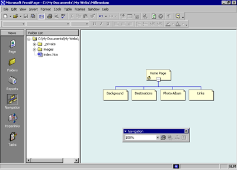

| ||||
A Web site is the collection of a home page and its associated pages, graphics, documents, multimedia, and other files. Web sites are stored on a Web server or on a computer's hard drive. FrontPage-based Web sites also contain files that support FrontPage-specific functionality and allow Web sites to be opened, copied, edited, published, and administered with FrontPage.
In the previous procedures, you learned how easy it is to create a Web page with FrontPage. As soon as you start the application, you can start typing and editing, then save the document to your hard drive -- much like a word processor. While you can certainly choose to put together an entire Web site like this, it can take a lot of manual work and attention to detail to maintain hyperlinks and source files, and keep your content up to date.
When you save your pages to a Web site, FrontPage can automatically manage and repair hyperlinks, organize files and folders, maintain dynamic navigation bars, check spelling across all pages in the Web site, and generate reports that point out problems with your pages and files.
To create a new Web site
FrontPage displays the New dialog box. Here, you can choose from several Web site templates and wizards, specify where you want to save your Web site, and what you want to call it.
Pressing the TAB key moves the selection to the field where you specify the name and location of the new Web site.
FrontPage creates a new Web site named "Millennium" and displays its name in the title bar at the top of the FrontPage application window. Because you'll be working with several files in your Web site, FrontPage also displays the Folder List, where you can see the files and folders in your current Web site, similar to files and folders in Windows Explorer. You'll learn how to use the Folder List later, in Lesson 2.
When you have a Web site open, the icons on the Views bar let you look at the information in your Web site in different ways.
Navigation view shows a graphical representation of the structure of your Web site. Because you created a one-page Web site, FrontPage has automatically designated it as the Web site's home page -- indicated with a small icon of a house. While in Navigation view, FrontPage also displays the Navigation toolbar, which you can drag anywhere on your screen.
Next to the Views bar, FrontPage displays the optional Folder List, just like it did in Page view.
In a moment, you'll replace the new, empty home page with the one you created earlier in this lesson. First, however, you'll create the structure for the other four pages that the Millennium Celebration Web will have.
Creating a Web site structure in Navigation view enables features such as page banners and navigation bars that are automatically updated whenever you change, add, or remove pages in your Web site. This makes it easy to change things around. You'll learn more about these features later.
To create a navigation structure
FrontPage creates a new page labeled "New Page 1" below the home page. Pages in Navigation view aren't the actual pages in the current Web site; they are placeholders that point to them. This way, you can easily experiment with the structure and organization of a Web site before you create its content.
CTRL+N is a keyboard shortcut for the New Page command. FrontPage supports common Windows and Microsoft Office accelerator keys that help speed up repetitive tasks. The pages you just created appear below the home page, because the home page was selected when you issued the command.
In Navigation view, the selected page is blue, while others are yellow.
Pressing the TAB key moves the selection to the next page in the structure and activates the page title for editing.
"Background" is the page title of one of the pages you'll create for the Millennium Celebration Web. Next, you'll specify the page titles for the other pages.
Pressing ENTER after editing a page title saves the new title without selecting another page. To deselect all pages, click anywhere outside the pages in Navigation view.
Your screen should now look like this:

You can quickly open pages in Page view for editing by double-clicking the pages in Navigation view or in the Folder List.
Next, you'll replace the blank home page FrontPage created from the Web site template by importing the home page you created and saved to your My Documents folder earlier in this lesson.
To import a page into a Web site
FrontPage opens the blank home page that was created from the Web site template.
FrontPage displays the Select File dialog box. Here, you can insert Web pages, word-processing documents, text files, and other documents on the current page.
FrontPage imports your previously saved home page to the current page.
FrontPage displays the Save Embedded Files dialog box. Here, you can preview, rename, save, and update embedded files that the current Web site will use.
When you previously saved this page to the My Documents folder on your file system, FrontPage left the two pictures you inserted in their original location -- the FrontPage Tutorial folder. The home page merely pointed to the picture files without copying them to the same folder the page was saved to. To keep Web sites portable, however, you should always keep associated pages and files as part of the Web site that uses them.
FrontPage saves the home page as Index.htm and saves copies of the embedded picture files, 2000.gif and Fp2000.gif, to the current Web site.
Did you find this material useful? Gripes? Compliments? Suggestions for other articles? Write us!
© 1999 Microsoft Corporation. All rights reserved. Terms of use.